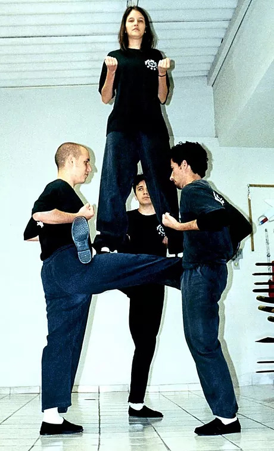

Base no Wing Chun
Por Thomas Pinheiro
Para muitos, trata-se de uma posição estranha, talvez até sem nexo, mas só para quem a vê. Assim como um prédio tem necessidade de um alicerce sólido, para uma arte marcial a possibilidade de firmeza, rapidez e proteção para uma luta real, e a curto espaço, praticamente colado ao adversário, é extremamente importante. A chance de um acumular de energia interna no dan tien, uma força a mais para as pernas. Esses motivos provavelmente levaram à utilização da postura de ye gee kim yeung ma por parte de Ng Mui no estilo Wing Chun (essa postura, aliás, já existia há centenas de anos antes do desenvolvimento da arte marcial de Ng Mui).
No Wing Chun, essa postura de montar no carneiro, exige um forte trabalho, que começa nos dedos do pé e passa pela posição dos pés, pela flexão dos joelhos, pela contração da musculatura lombar, pela coluna ereta, e pelos punhos cerrados na altura do peito sem que se ultrapasse a linha do tronco. Acrescente a tudo isso, ombros relaxados e mente concentrada. O que visualmente parece fácil, transforma-se, então, num árduo exercício, pois ao iniciar o treinamento da postura ye gee kim yeung ma, é comum o aparecimento de cãimbras nos pés e, coxas, assim como um tremor fora de controle nas pernas. Mas isso ocorre, em geral, apenas nas primeiras semanas, sendo superado com a adaptação do corpo ao trabalho da postura.
Deve-se, porém fazer uma ressalva quanto a problemas que podem ser ocasionados pelo treino executado de forma errada, desde problemas de ordem técnica até aqueles que colocam em risco a integridade física do praticante, como por exemplo problemas posturais de coluna, lesões nos joelhos e aumento de tensão corporal. A exigência quanto ao treinar a postura de ye gee kim yeung ma deve-se por ser uma postura que desenvolve o praticante em situações futuras, sendo o alicerce dentro do estilo Wing Chun.
Basicamente só se trabalham duas posturas no Wing Chun: ye gee kim yeung ma e jeeu ma, cuja diferença está na concentração de peso nas pernas. A primeira visa manter o peso distribuído igualmente entre as pernas, enquanto a segunda, concentrando-se mais peso em uma perna do que em outra. A postura jeeu ma, deve ser utilizada em combate real e, como a postura de ye gee kim yeung ma, defende a área baixa (genital) de chute desferido entre as pernas (chute de baixo para cima, ex:. peito de pé), permite ao praticante quando da perfeita execução da postura, utilizar chutes sem telegrafá-los com o mexer do tronco, proporcionando também o uso dos joelhos (pik po), tanto na defesa, quanto no ataque.
A proporção correta quanto ao tamanho da base está ligada à firmeza, potência e velocidade do deslocamento (uma possível andada, um giro). Uma postura muito larga, baixa, além de possibilitar ataques por entre as pernas, dificulta a locomoção, deixando o movimento mais lento. Em contra partida, uma postura curta ou alta demais, diminui a força de gravidade, proporcionando menos equilíbrio e, conseqüentemente, a geração de potência. Uma base ruim não permite, no Wing Chun, um desenvolvimento correto em técnicas, seja em perna, seja em braço. A postura ye gee kim yeung ma é utilizada com o propósito de fortalecer as duas pernas e, assim, fazer com que o praticante se habitue à proporção e à posição que lhe proporcionem mais equilíbrio para as necessidades do estilo.
Seguindo a filosofia chinesa, a postura possui não uma finalidade específica, mas várias, destacando-se no ye gee kim yeung ma tanto o trabalho externo, como musculatura, ossos, ligamentos e tendões, quanto o trabalho interno, acúmulo de energia no dan tien (ponto que funciona como um reservatório de energia interna no corpo), proporciona equilíbrio e tranqüilidade à mente. A posição dos punhos cerrados na altura do peito ajuda no exercício de concentração, no exercitar a fechada das mãos, além do trabalho com o ombro e a área do cotovelo. A prática de exercícios com base em uma perna e um exigente treino de deslocamentos são muito importantes para o aperfeiçoamento da postura.
Quando o Wing Chun foi criado, imaginava-se que o praticante já teria um bom desenvolvimento, seja de postura, seja de força nas pernas, além da prática anterior de kung fu. Por esse motivo, ignorou-se inicialmente o treinamento específico para as pernas. Hoje, o Wing Chun muitas vezes, vem a ser a primeira arte marcial a ser treinada por um indíviduo, o que leva ao desenvolvimento de um trabalho de base mais completo. Não é incomum a utilização de treino de posturas de outros estilos de kung fu ou exercícios de seqüências para se obter melhores e mais rápidos resultados com a base de wing chun.